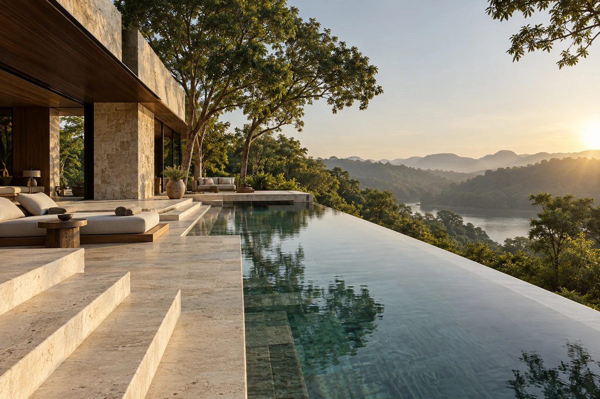

Séjour contemplatif
Le jardin, un rituel au spa et une promenade guidée au petit matin.

Des rencontres et des émotions qui donnent au séjour sa couleur particulière.
Explorer la maisonCes propositions sont des expériences fictives, sans prestataires réels engagés. Elles se composent autour de votre rythme.

Une visite d’atelier, une rencontre avec un artisan, une conversation sur la matière. Découvrir un territoire à travers celles et ceux qui le créent.
Une marche privée entre les arbres, un point de vue choisi, un panier pour prolonger la matinée. Une excursion imaginaire à composer selon la saison.

Une dégustation intime ou un atelier autour d’un produit. La cuisine devient un langage que l’on partage.

de ne rien prévoir." loading="lazy" width="1600" height="1067">Lire près de l’eau, s’attarder au jardin et laisser l’agenda se vider. Une expérience dont vous choisissez la mesure.

Un dîner au crépuscule, un rituel duo et un bouquet de saison : une proposition de séjour romantique sans programme imposé.
Le jardin, un rituel au spa et une promenade guidée au petit matin.
Salon calme, horaires adaptés et temps de travail préservés. Aucun équipement de conférence réel n’est garanti.
Une table intime et une mise en scène sobre pour un anniversaire ou une petite réception.

Transferts, rythme familial, occasions particulières : la conciergerie fictive illustre un accompagnement qui commence par l’écoute.
Une ombre, une ligne, une lumière.
Suivre un chemin sans se hâter.
Composez votre demande pour découvrir l’interface. Rien n’est envoyé à un établissement. N’utilisez pas de données personnelles réelles.